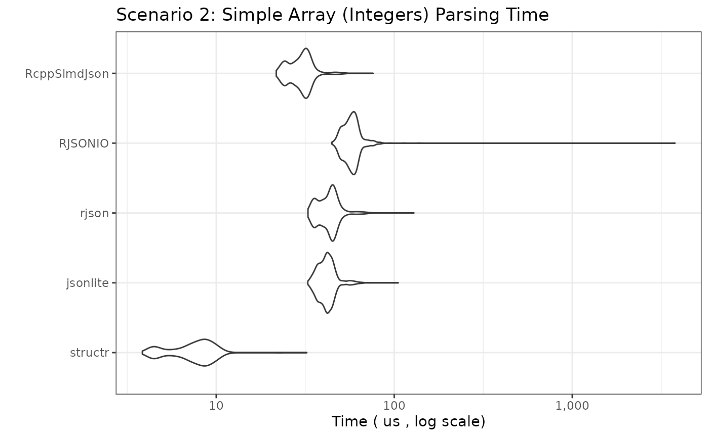

JSON Parsing Performance Benchmark: structr vs jsonlite vs rjson vs RJSONIO
2025-04-22
Source:vignettes/bench.Rmd
bench.RmdIntroduction
This document benchmarks the performance of different R packages for parsing JSON strings into R objects. We compare:
-
structr: Parses JSON and simultaneously validates it against a predefined schema (implemented in Rust usingserdeandsimd-json). -
jsonlite: A widely used, robust JSON parser (implemented in C). -
rjson: Another JSON parser (implemented in C). -
RJSONIO: A versatile JSON parser, often used for interfacing with web APIs (implemented in C).
The goal is to compare parsing speed across a wider range of JSON structures, from simple atomic values to large arrays and deeply nested objects.
Benchmark Setup
We will test several scenarios representing common and challenging
JSON structures. For structr, we pre-build the required
structure definitions outside the timed benchmark loop, reflecting
typical usage (define the structure once, parse many times).
Disclaimer
If you are reading this vignette on GitHub Pages, the benchmarks ran in GitHub Actions. The results will differ every time they run depending on many factors. If you want a true realistic benchmark, run the code in your own environment.
JSON Data and structr Schemas
The schemas and JSON objects are defined in the source code of this document. Since the values can be long, they are hidden from the final output, however, they are fully available in the source code.
Benchmarking Parameters
# Number of times to run each benchmark expression
# Adjust down for slower scenarios if needed
benchmark_times_fast <- 1000
benchmark_times_medium <- 500
benchmark_times_slow <- 100
# Unit for reporting timings
benchmark_unit_fast <- "us" # microseconds
benchmark_unit_medium <- "ms" # milliseconds
benchmark_unit_slow <- "ms" # millisecondsBenchmark Results
We now run the benchmarks for each scenario. The plots show the
distribution of execution times (lower is better). Note the Y-axis is
often on a logarithmic scale due to potentially large performance
differences. We use check = "equal" or wrap
fromJSON calls in try() for complex cases
where strict equality might fail due to floating point differences or
minor structural variations between parsers, focusing instead on raw
speed.
Scenario 1: Simple Flat Object
bm_simple_object <- microbenchmark(
structr = structr::parse_json(json_simple_object, structr_simple_object),
jsonlite = jsonlite::fromJSON(json_simple_object, simplifyDataFrame = FALSE),
rjson = rjson::fromJSON(json_simple_object),
RJSONIO = RJSONIO::fromJSON(json_simple_object, simplify = FALSE),
RcppSimdJson = RcppSimdJson::fparse(json_simple_object),
times = benchmark_times_fast, unit = benchmark_unit_fast, check = "equal"
)
print_and_plot(bm_simple_object,
title = "Scenario 1: Simple Flat Object Parsing Time",
y_label = paste("Time (", benchmark_unit_fast, ", log scale)")
)## Unit: microseconds
## expr min lq mean median uq max neval
## structr 4.899 7.454 9.192114 9.1870 10.2645 38.442 1000
## jsonlite 42.399 51.025 59.962012 54.5110 63.6435 2847.625 1000
## rjson 28.804 36.704 42.250469 41.1210 45.7100 110.446 1000
## RJSONIO 34.715 43.596 49.035002 48.2100 53.1395 127.799 1000
## RcppSimdJson 20.879 27.782 32.505742 31.2435 35.5915 66.213 1000
Scenario 2: Simple Array (Integers, 50 items)
bm_simple_array_int <- microbenchmark(
structr = structr::parse_json(json_simple_array_int, structr_simple_array_int),
jsonlite = jsonlite::fromJSON(json_simple_array_int), # simplify = TRUE default good here
rjson = rjson::fromJSON(json_simple_array_int),
RJSONIO = RJSONIO::fromJSON(json_simple_array_int), # simplify = TRUE default good here
RcppSimdJson = RcppSimdJson::fparse(json_simple_array_int),
times = benchmark_times_fast, unit = benchmark_unit_fast, check = "equal"
)
print_and_plot(bm_simple_array_int,
title = "Scenario 2: Simple Array (Integers) Parsing Time",
y_label = paste("Time (", benchmark_unit_fast, ", log scale)")
)## Unit: microseconds
## expr min lq mean median uq max neval
## structr 3.937 5.9410 7.602014 7.6945 8.6560 29.224 1000
## jsonlite 33.182 38.4470 42.046634 41.5980 43.8420 110.086 1000
## rjson 32.020 38.2720 43.332645 43.7065 46.3565 125.154 1000
## RJSONIO 45.365 53.2790 57.743020 57.4830 60.6785 143.798 1000
## RcppSimdJson 21.360 25.9235 32.863819 29.9560 32.0050 3394.946 1000
Scenario 3: Simple Array (Strings, 26 items)
bm_simple_array_str <- microbenchmark(
structr = structr::parse_json(json_simple_array_str, structr_simple_array_str),
jsonlite = jsonlite::fromJSON(json_simple_array_str),
rjson = rjson::fromJSON(json_simple_array_str),
RJSONIO = RJSONIO::fromJSON(json_simple_array_str),
RcppSimdJson = RcppSimdJson::fparse(json_simple_array_str),
times = benchmark_times_fast, unit = benchmark_unit_fast, check = "equal"
)
print_and_plot(bm_simple_array_str,
title = "Scenario 3: Simple Array (Strings) Parsing Time",
y_label = paste("Time (", benchmark_unit_fast, ", log scale)")
)## Unit: microseconds
## expr min lq mean median uq max neval
## structr 4.168 6.1820 7.447508 7.5695 8.5610 27.592 1000
## jsonlite 25.678 30.7525 33.796142 33.7730 35.7420 75.942 1000
## rjson 29.916 36.0470 39.912853 40.1700 42.6600 123.561 1000
## RJSONIO 40.135 48.1550 52.213798 51.9475 54.7625 153.215 1000
## RcppSimdJson 21.350 26.3035 33.103361 29.8655 32.0300 3300.308 1000
Scenario 4: Nested Object
bm_nested_object <-
microbenchmark(
structr = structr::parse_json(json_nested_object, structr_nested_object),
jsonlite = jsonlite::fromJSON(json_nested_object, simplifyVector = FALSE),
rjson = rjson::fromJSON(json_nested_object),
RJSONIO = RJSONIO::fromJSON(json_nested_object, simplify = FALSE), # avoid matrix/df conversion
RcppSimdJson = RcppSimdJson::fparse(json_nested_object),
times = benchmark_times_fast, unit = benchmark_unit_fast, check = NULL # Disable check due to potential minor diffs
)
print_and_plot(bm_nested_object,
title = "Scenario 4: Nested Object Parsing Time",
y_label = paste("Time (", benchmark_unit_fast, ", log scale)")
)## Unit: microseconds
## expr min lq mean median uq max neval
## structr 17.182 22.6925 25.59093 25.8335 27.6420 65.082 1000
## jsonlite 26.309 33.3825 37.42539 37.1945 39.7240 74.660 1000
## rjson 41.637 50.4490 59.35239 56.2650 60.1375 3142.535 1000
## RJSONIO 54.912 64.5860 70.49367 69.6800 74.1590 182.951 1000
## RcppSimdJson 28.844 36.5985 42.21154 42.6845 45.8955 131.105 1000
Scenario 5: Array of Simple Objects (100 Objects)
bm_array_of_objects <-
microbenchmark(
structr = structr::parse_json(json_array_of_objects, structr_array_of_objects),
jsonlite = jsonlite::fromJSON(json_array_of_objects, simplifyVector = FALSE, simplifyDataFrame = FALSE), # Force list output
rjson = rjson::fromJSON(json_array_of_objects),
RJSONIO = RJSONIO::fromJSON(json_array_of_objects, simplify = FALSE), # Results in list of lists
RcppSimdJson = RcppSimdJson::fparse(json_array_of_objects),
times = benchmark_times_medium, unit = benchmark_unit_medium, check = NULL
)
print_and_plot(bm_array_of_objects,
title = "Scenario 5: Array of 100 Objects Parsing Time",
y_label = paste("Time (", benchmark_unit_medium, ", log scale)")
)## Unit: milliseconds
## expr min lq mean median uq max neval
## structr 0.190395 0.2228010 0.23824712 0.2333955 0.2468710 1.950821 500
## jsonlite 0.119553 0.1506865 0.16896090 0.1581960 0.1632040 3.612822 500
## rjson 0.163185 0.1785780 0.19213523 0.1903455 0.2051480 0.273982 500
## RJSONIO 0.246510 0.2670930 0.27798624 0.2745125 0.2857430 0.444159 500
## RcppSimdJson 0.054793 0.0670700 0.08055183 0.0769390 0.0937795 0.157353 500
Scenario 6: Large Array of Simple Objects (1000 Objects)
bm_large_array_of_objects <-
microbenchmark(
structr = structr::parse_json(json_large_array_of_objects, structr_large_array_of_objects),
jsonlite = jsonlite::fromJSON(json_large_array_of_objects, simplifyVector = FALSE, simplifyDataFrame = FALSE),
rjson = rjson::fromJSON(json_large_array_of_objects),
RJSONIO = RJSONIO::fromJSON(json_large_array_of_objects, simplify = FALSE),
RcppSimdJson = RcppSimdJson::fparse(json_large_array_of_objects),
times = benchmark_times_medium,
unit = benchmark_unit_medium,
check = NULL # Disable check
)
print_and_plot(bm_large_array_of_objects,
title = "Scenario 6: Array of 1000 Objects Parsing Time",
y_label = paste("Time (", benchmark_unit_medium, ", log scale)")
)## Unit: milliseconds
## expr min lq mean median uq max neval
## structr 2.152086 2.398340 2.6086492 2.511277 2.6441995 11.037206 500
## jsonlite 1.381969 1.425505 1.5358536 1.461287 1.5505235 7.065805 500
## rjson 1.360268 1.407532 1.5863846 1.440888 1.5403140 13.555296 500
## RJSONIO 2.017324 2.187096 2.2980437 2.207324 2.2838425 8.475857 500
## RcppSimdJson 0.330447 0.353275 0.4157574 0.375155 0.4127005 0.699966 500
Scenario 7: Large Integer Array (10,000 items)
bm_large_array_int <-
microbenchmark(
structr = structr::parse_json(json_large_array_int, structr_large_array_int),
jsonlite = jsonlite::fromJSON(json_large_array_int),
rjson = rjson::fromJSON(json_large_array_int),
RJSONIO = RJSONIO::fromJSON(json_large_array_int),
RcppSimdJson = RcppSimdJson::fparse(json_large_array_int),
times = benchmark_times_medium,
unit = benchmark_unit_medium,
check = "equal"
)
print_and_plot(bm_large_array_int,
title = "Scenario 7: Large Integer Array (10k) Parsing Time",
y_label = paste("Time (", benchmark_unit_medium, ", log scale)")
)## Unit: milliseconds
## expr min lq mean median uq max neval
## structr 0.188091 0.1969975 0.2115499 0.2035550 0.2262920 0.345995 500
## jsonlite 2.370985 2.6537825 2.8519514 2.7527370 2.8374055 7.422822 500
## rjson 1.054868 1.0819940 1.2088789 1.0966115 1.1247190 12.316904 500
## RJSONIO 2.555058 2.5951530 2.6592767 2.6150400 2.6493690 7.498032 500
## RcppSimdJson 0.190225 0.2030890 0.2219051 0.2122465 0.2383655 0.358719 500
Scenario 8: Large String Array (10,000 items)
bm_large_array_str <-
microbenchmark(
structr = structr::parse_json(json_large_array_str, structr_large_array_str),
jsonlite = jsonlite::fromJSON(json_large_array_str),
rjson = rjson::fromJSON(json_large_array_str),
RJSONIO = RJSONIO::fromJSON(json_large_array_str),
RcppSimdJson = RcppSimdJson::fparse(json_large_array_str),
times = benchmark_times_medium,
unit = benchmark_unit_medium,
check = "equal"
)
print_and_plot(bm_large_array_str,
title = "Scenario 8: Large String Array (10k) Parsing Time",
y_label = paste("Time (", benchmark_unit_medium, ", log scale)")
)## Unit: milliseconds
## expr min lq mean median uq max neval
## structr 0.678697 0.6969955 0.7180350 0.707971 0.735342 0.995989 500
## jsonlite 2.264105 2.4071720 2.6127171 2.523494 2.662444 7.775149 500
## rjson 1.321045 1.3467430 1.4469878 1.374610 1.408038 6.642807 500
## RJSONIO 3.487628 3.5259000 3.6823692 3.556998 3.595149 12.227528 500
## RcppSimdJson 0.642259 0.6629230 0.6907722 0.679768 0.711623 1.058215 500
Scenario 9: Deeply Nested Object (10 levels)
bm_deep_nest <- microbenchmark(
structr = structr::parse_json(json_deep_nest, structr_deep_nest),
jsonlite = jsonlite::fromJSON(json_deep_nest, simplifyVector = FALSE, simplifyDataFrame = FALSE),
rjson = rjson::fromJSON(json_deep_nest),
RJSONIO = RJSONIO::fromJSON(json_deep_nest, simplify = FALSE),
RcppSimdJson = RcppSimdJson::fparse(json_deep_nest),
times = benchmark_times_fast,
unit = benchmark_unit_fast,
check = "equal"
)
print_and_plot(bm_deep_nest,
title = "Scenario 9: Deeply Nested Object (10 Levels) Parsing Time",
y_label = paste("Time (", benchmark_unit_fast, ", log scale)")
)## Unit: microseconds
## expr min lq mean median uq max neval
## structr 13.345 16.5555 18.33186 18.3640 19.5865 43.411 1000
## jsonlite 17.523 20.7285 23.47486 23.3840 24.9120 77.855 1000
## rjson 30.557 36.3530 45.14336 41.0320 43.5510 4354.416 1000
## RJSONIO 38.973 46.3265 50.49376 50.4445 53.1045 136.164 1000
## RcppSimdJson 23.775 28.7590 32.25526 32.2755 34.3790 75.952 1000
Scenario 10: Wide Object (100 fields)
bm_wide_object <- microbenchmark(
structr = structr::parse_json(json_wide_object, structr_wide_object),
jsonlite = jsonlite::fromJSON(json_wide_object, simplifyVector = FALSE, simplifyDataFrame = FALSE),
rjson = rjson::fromJSON(json_wide_object),
RJSONIO = RJSONIO::fromJSON(json_wide_object, simplify = FALSE),
RcppSimdJson = RcppSimdJson::fparse(json_wide_object),
times = benchmark_times_medium,
unit = benchmark_unit_medium,
check = "equal"
)
print_and_plot(bm_wide_object,
title = "Scenario 10: Wide Object (100 Fields) Parsing Time",
y_label = paste("Time (", benchmark_unit_medium, ", log scale)")
)## Unit: milliseconds
## expr min lq mean median uq max neval
## structr 0.058739 0.0690240 0.07308728 0.0729510 0.0758865 0.121968 500
## jsonlite 0.038422 0.0499790 0.05396680 0.0533245 0.0563850 0.116868 500
## rjson 0.062787 0.0720245 0.07843663 0.0783110 0.0826695 0.144139 500
## RJSONIO 0.082985 0.0920765 0.10893664 0.0974620 0.1030120 5.324386 500
## RcppSimdJson 0.033773 0.0408665 0.04696561 0.0468020 0.0512050 0.120275 500